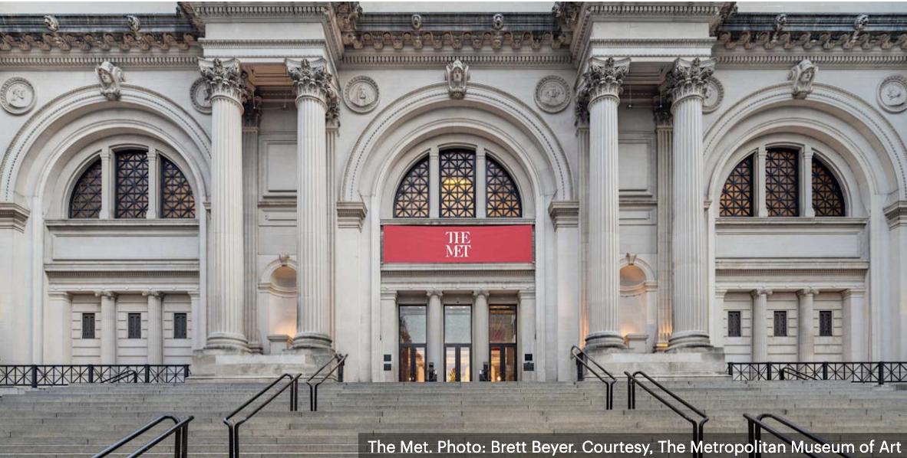
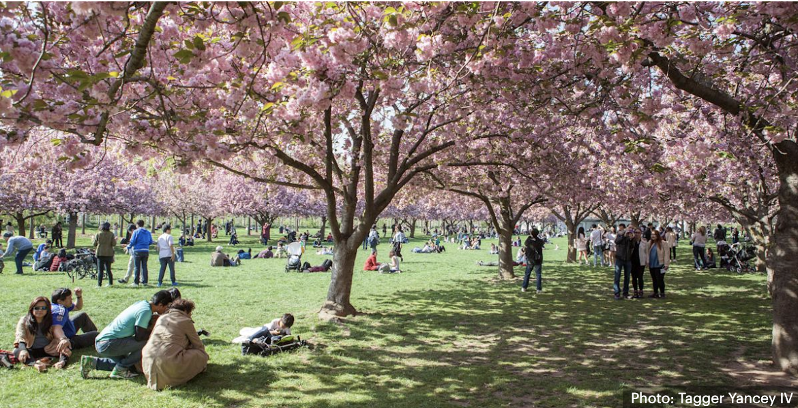
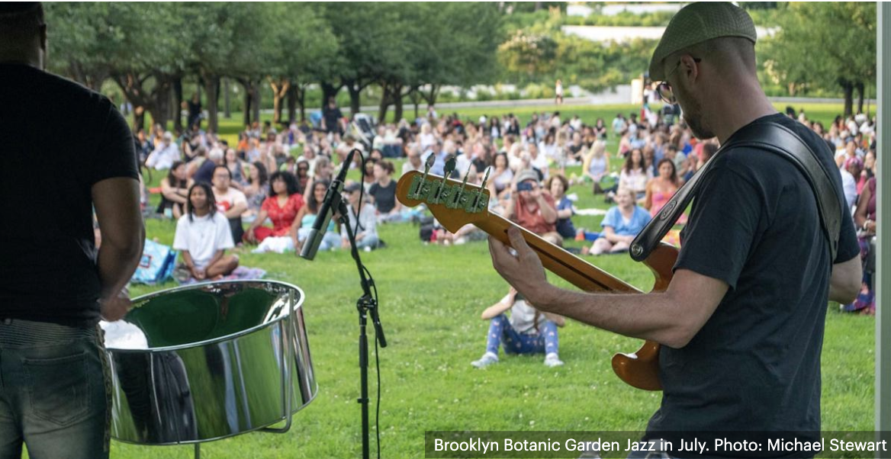
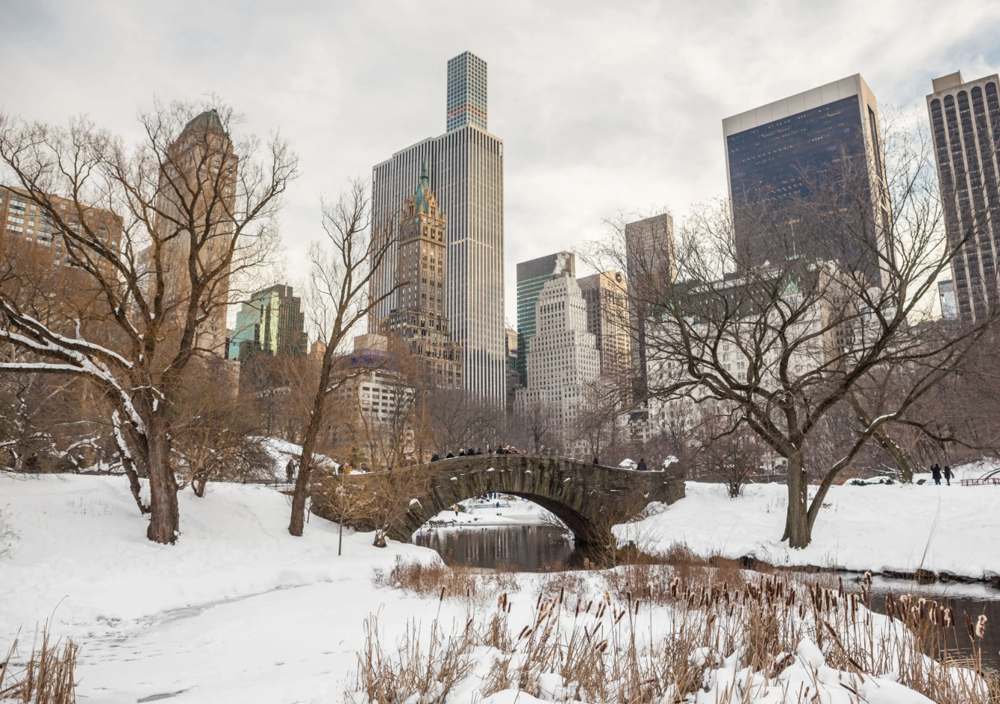

Assista primeiro e depois planeje melhor
O vídeo ajuda a sentir a cidade antes de tomar decisões práticas. Depois disso, esta página entra como base editorial para definir ritmo, foco e prioridades.
 LIPE TRAVEL SHOW
LIPE TRAVEL SHOW
Nova York pode ser clássica, prática, intensa, sofisticada, cultural, familiar ou surpreendentemente leve — e talvez seja justamente isso que faz tanta gente voltar. Aqui, a viagem funciona melhor quando você entende qual Nova York combina com você.
Antes de montar roteiro, hotel e bairros, eu recomendo começar pelo vídeo. É a forma mais rápida de entrar no clima da cidade e já visualizar que tipo de viagem faz mais sentido para o seu perfil.
O vídeo ajuda a sentir a cidade antes de tomar decisões práticas. Depois disso, esta página entra como base editorial para definir ritmo, foco e prioridades.
Assista, salve as ideias principais e depois volte para organizar a viagem com mais clareza.
Nova York não é só uma lista de pontos turísticos. Ela muda bastante conforme o seu ritmo e o seu estilo.
A melhor viagem quase nunca é a que tenta ver tudo. É a que escolhe melhor.
Uma das melhores formas de planejar Nova York é parar de pensar nela como uma cidade única. Na prática, ela muda bastante dependendo do seu momento, do seu estilo de viagem e do ritmo que você quer imprimir.
O ideal costuma ser equilibrar os grandes clássicos com logística simples. Faz sentido ficar em uma região central e combinar ícones como Times Square, Central Park, observatórios, museus e Broadway sem tentar encaixar tudo de uma vez.
Quem já foi a Nova York costuma aproveitar melhor quando desacelera um pouco e troca a ansiedade de cumprir lista por bairros, cafés, lojas, parques, museus e experiências mais locais.
Nova York funciona muito bem para viagem a dois: rooftops, bons restaurantes, walks charmosos, bairros elegantes, show à noite e aquele equilíbrio entre energia urbana e clima especial.
Com planejamento, a cidade funciona super bem. O segredo está menos em fazer tudo e mais em combinar atrações icônicas com pausas, parques, museus mais dinâmicos e um hotel bem localizado.
Para quem quer uma viagem mais sofisticada, Nova York entrega muito bem: hotéis icônicos, endereços clássicos, compras, gastronomia forte, cultura e serviço de alto nível.
Mesmo com foco em otimização de orçamento e logística, a cidade funciona. Escolher bem a base, entender o perfil dos bairros e montar um roteiro coerente faz muita diferença.
Em Nova York, cultura não é uma camada extra: ela muda a qualidade da viagem. A ideia aqui não é tentar esgotar tudo na home, mas deixar claro o que vale priorizar.
 Assistir a um musical em Nova York continua sendo uma das experiências mais marcantes da viagem
Assistir a um musical em Nova York continua sendo uma das experiências mais marcantes da viagem
Para muita gente, é um dos momentos que realmente marcam a viagem. Se estiver na dúvida, inclua pelo menos um espetáculo no roteiro. Mesmo quem não costuma priorizar teatro muitas vezes sai impressionado com a experiência.
Em vez de tentar ver todos, o ideal é escolher os que mais conversam com você. O Met funciona muito bem para quem gosta de grandeza, acervo e experiência clássica.
Mas cultura em Nova York não está só dentro dos museus. Ela aparece na arquitetura, nas livrarias, nas vitrines, nas ruas e na forma como a cidade se organiza.

Escolha menos museus e aproveite melhor cada umEssa é uma camada que eu não queria perder. Ver a cidade da água muda a escala, abre o skyline e traz uma Nova York menos óbvia e mais elegante.
Nem toda lembrança forte de Nova York vem de um observatório. Muitas vêm justamente desses momentos em que a cidade aparece inteira.
Nova York continua sendo uma cidade muito forte para compras, mas a experiência melhora bastante quando você entende o tipo de compra que quer fazer.
Para quem quer vitrines, atmosfera e marcas, SoHo costuma funcionar muito bem. Além das lojas, existe um prazer claro em caminhar pela região, observar fachadas, entrar em endereços mais autorais e misturar compras com cafés e pausas.
Já a Fifth Avenue segue sendo um eixo simbólico para quem quer viver essa Nova York mais clássica, icônica e aspiracional.
Nova York funciona o ano todo, mas a experiência muda bastante conforme a estação. A melhor escolha depende do tipo de atmosfera que você quer viver.

Uma das épocas mais bonitas para viver a cidade. Luz, cores e temperatura costumam favorecer muito a viagem.

Uma Nova York mais leve, florida e vibrante. Ótima época para combinar cidade, parques, cultura e vida ao ar livre.

Mais intenso, mais cheio e também com muita energia, rooftops, vida nos parques e waterfronts.

Tem apelo clássico, principalmente para quem sonha com atmosfera de fim de ano, vitrines, luzes e Natal.
Se você quiser começar a pesquisar agora, deixei aqui os links que eu uso para voos, hotéis e busca geral.
Eu posso transformar toda essa inspiração em uma viagem prática e bem amarrada — com definição de bairros, hotel, roteiro por perfil, ritmo ideal e escolhas que façam sentido para o seu estilo.